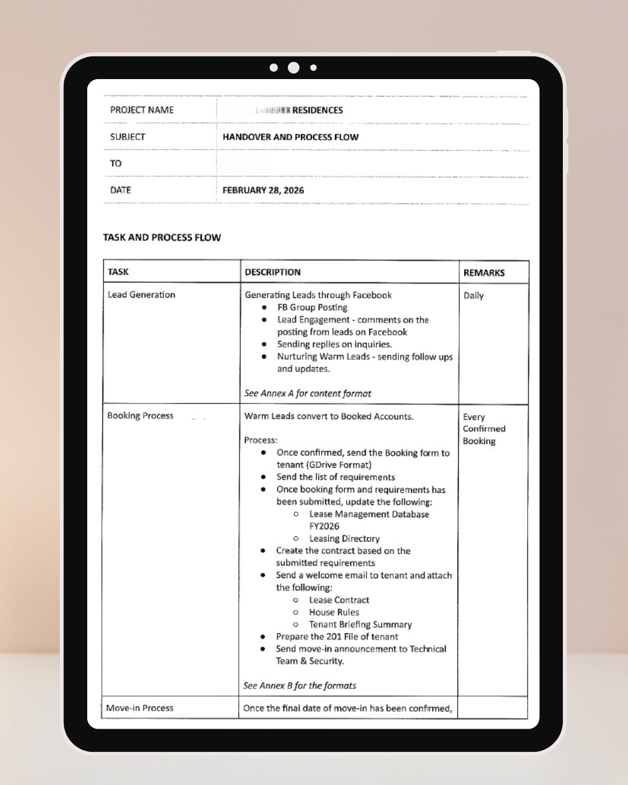
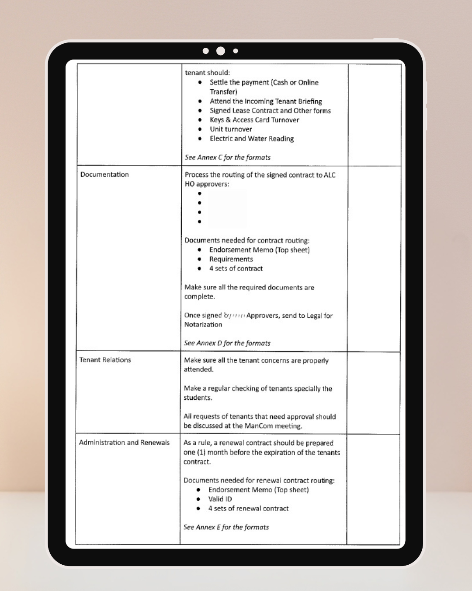
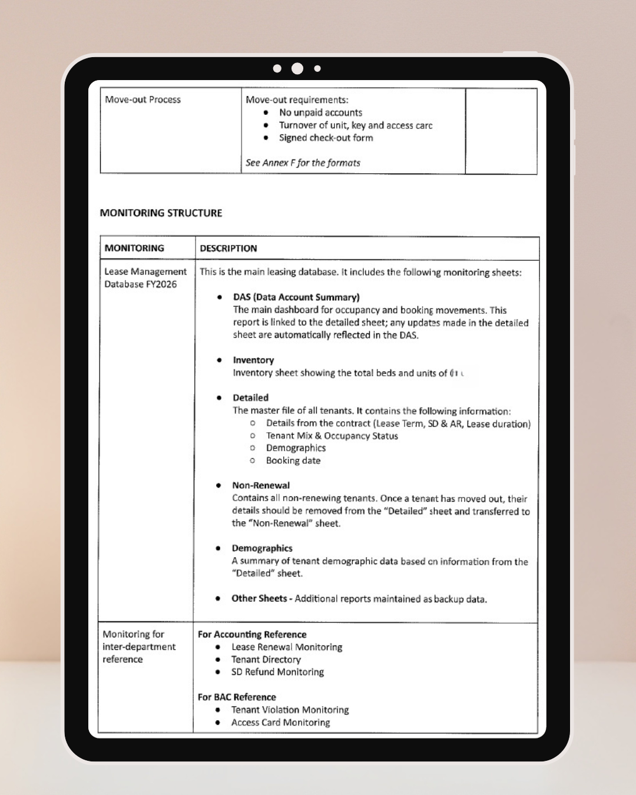
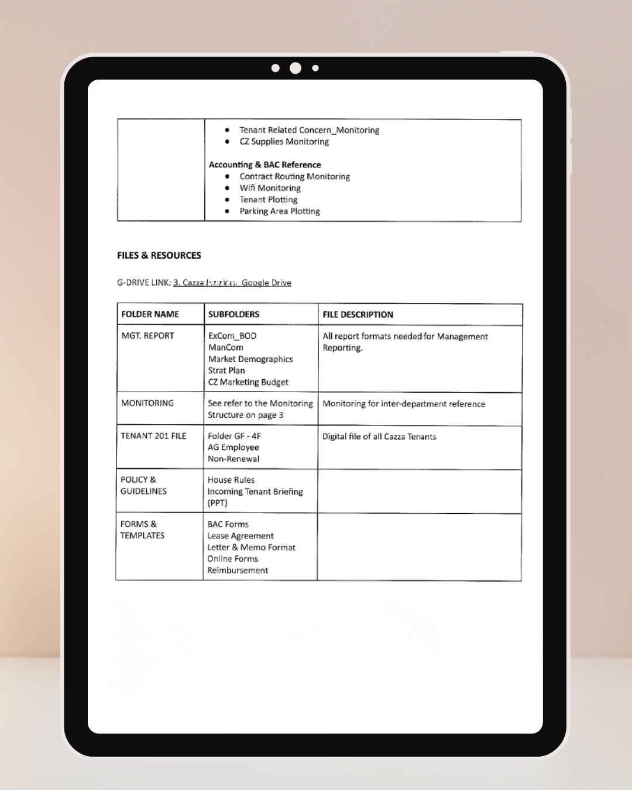

A complete process handover, built to help my replacement pick up exactly where I left off — no gaps, no guesswork.
When I resigned from my role, my replacement needed more than a quick handoff — they needed to understand the entire process well enough to run it without me there to explain it.
I mapped the full process from start to finish into one guide — how it works, how to monitor it, which documents matter, and how to report on it — so the transition wouldn't depend on memory or guesswork.
A replacement who could step in with confidence, and a process that kept running smoothly after I left.




View the full working file, formulas, and structure on Google Drive.
View on Google Drive ↗